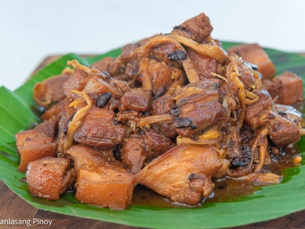

Odin Recipes
Humba (Bohol Style)

Description
This is a recipe of favorite version of the Humba dish. The smell of star snise, and the slight aroma of the black
beans reminds me of a abundant rural childhood in Bohol. The Humba bears similar ingredients to the Adobo, but the
former is slightly sweeter and much more tender
I have fond memories of this dish, and merely thinking about it warms my soul. I can picture the scene where
bucketloads of pork simmer on its oil, cooked in the largest pan I had ever seen, with my numerous relatives eagerly
waiting for the dish to be served. I ate this dish for a whole week, Breakfast, Lunch, Dinner and when it was time
to go home to our province we asked for enough takeaways to last another week.
Ingredients
- 2 kg pork belly, cubed
- 1 piece Knorr Pork Cube
- 3 cups clear soft drink, Sprite
- 1 cup water as needed
- 2 ounces banana blossoms
- 2 tablespoon salted black beans
- 3 tablespoon white vinegar
- 1/2 cup soy sauce
- 1 piece onion, chopped
- 2 tablespoon brown sugar
- 6 gloves garlic, crushed and chopped
- 1/2 teaspoon crushed peppercorn
Steps:
- Heat a wok or pan. Sear pork belly until it turns brown and enough oil gets extracted from the fat. Remove the
pork from the wok. Set aside.
- Heat around 3 tablespoons of oil. Sauté garlic and onion until the onion softens.
- Add the pork back into the wok and pour-in soy sauce. Sauté for 1 minute.
- Add vinegar. Continue sautéing until liquid dries-up.
- Pour clear soft drinks into the wok. Cover and let boil.
- Add crushed peppercorn. Adjust heat to low. Continue boiling for 35 minutes.
- Add banana blossoms and salted black beans. Cover the wok and continue cooking until the pork gets tender. Note:
you can add water if needed.
- Add brown sugar. Stir. Cook for 1 minute.
- Transfer to a serving plate. Serve with warm rice.